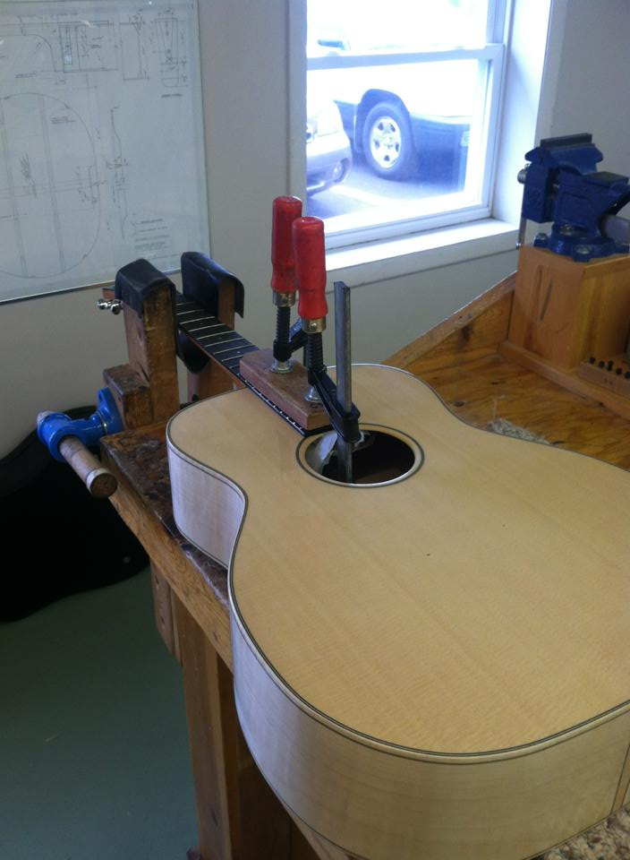
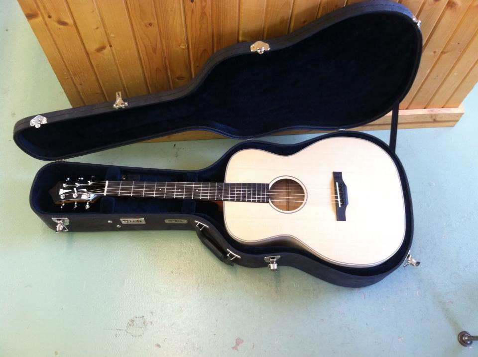

lutherie
2013
when I was a young 18/19 year old, i took a year off college. after years of battling a chronic viral illness while still trying to main my over achiever, perfectionist status, I was a little burnt out after high school (a grim, but growing trend unfortunately).
I spent some time working, mostly with my hands, and (re)discovered my aptitude for building things.
During this time, I became quite interested in wood working, as well as being quite interested in music (guitar playing specifically), so I set out to build guitars. After a couple disaterous attempts at guitar building by myself (turns out electric guitar kits are only so useful if you still have all the tools necessary), I resorted to taking a lutherie course.
 My acoustic guitar in progress
While challenging in many ways, including being one of the youngest people in the course and the only woman, I achieved my goal of building an acoustic guitar from scratch, as well as building an electric guitar modeled after a Gibson Les Paul.
 My finished acoustic guitar